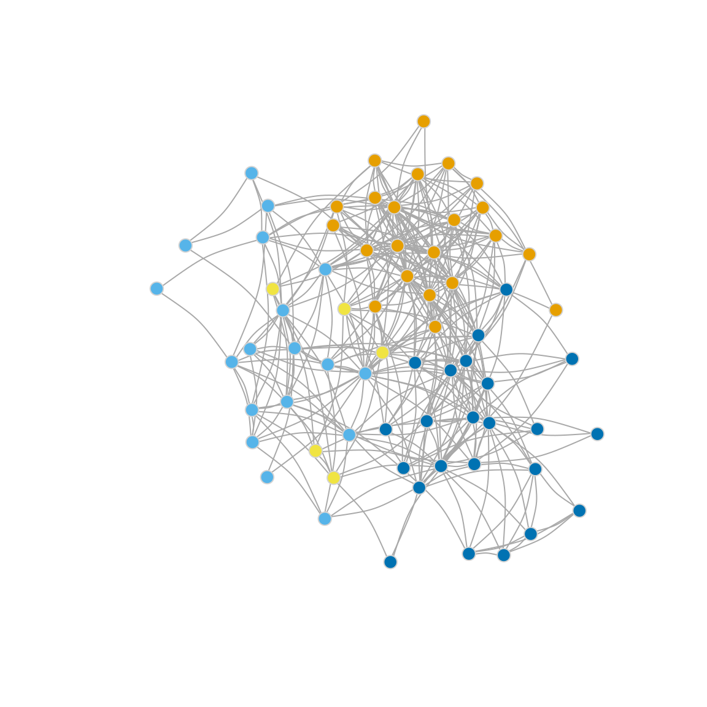

The Louvain Approach to Community Detection
As we saw in the modularity notes, Newman’s greedy algorithm merges whole communities, two at a time. The Louvain method proposed by Blondel et al. (2008) uses the same bottom-up strategy, but instead of merging pairs of communities it moves single nodes from one community to a neighboring one (a community where at least one of their neighbors already sits), keeping any move that raises the modularity. A second step then collapses the communities found so far into single community-nodes. The result is a smaller weighted graph whose nodes are the communities, whose edge weights count how many links ran between them in the original network, and whose self-loops count the links inside each community. The two steps alternate until no move improves the modularity.
We build the method twice. The first version takes it one step at a time. The second follows Fouss et al. (2016, 379–80) (Algorithms 8.7 and 8.8), whose step 1 scores candidate moves with the modularity matrix \(\mathbf{B}\) and whose step 2 is a single matrix product with the membership matrix \(\mathbf{U}\) (as discussed in the modularity notes).
The running example is the Lazega law firm friendship network (Lazega 2001) with degree-one nodes dropped, the same network used in the modularity note.
1 Step 1: Local Optimization by Moving Nodes Around
Here’s a function that does the first step. It visits the nodes in random order, tries each of their adjacent communities in turn, and keeps the move that raises the modularity the most:
Code
louvain.step1 <- function(x, seed = 123) {
set.seed(seed)
n <- vcount(x)
comm <- 1:n # every node starts in its own community
m <- Inf # moves made in the most recent full pass
while (m > 0) {
m <- 0
for (i in sample(n)) { # nodes are visited in random order
Ni <- neighbors(x, i) # neighbors of node i
commNi <- unique(comm[Ni]) # communities of i's neighbors
adjclust <- setdiff(commNi, comm[i]) # i's adjacent communities, excluding its own
if (length(adjclust) == 0) next # no adjacent community to move into
best.mod <- 0
t <- NULL
for (k in adjclust) { # loop over adjacent communities
tc <- comm
tc[i] <- k # tentatively move i into community k
mod.diff <- modularity(x, tc) - modularity(x, comm) # modularity change from the move
if (mod.diff > best.mod) {
best.mod <- mod.diff
t <- k # setting the target community to the one that gives the best gain
}
} # end of loop over adjacent communities
if (!is.null(t)) { # if a move was found that improves modularity
comm[i] <- t # move i into the best adjacent community
m <- m + 1 # update the count of moves made in this pass
}
}
}
return(comm)
}The function takes a graph and a seed and returns community labels, one per node.
Lines 1-2 take the graph as an input and set the random-number seed from the
seedargument. Fixing the seed is required because the algorithm randomizes the node list before looping through them and different randomization orders can lead to different modularity maximization local optima. Line 3 counts the number of nodes, and line 4 gives every node its own community label (a vector of numbers between 1 and \(N\) where \(N\) is the number of nodes), so like Newman’s greedy algorithm the Louvain method also starts with every node in its own community.In line 5 we initialize the object
m(which counts how many nodes were relocated during the most recent full pass) using the value ofInf. Thewhileloop that starts in line 6 keeps going as long asmis greater than zero at the end of a pass. Line 7 resets the move count to zero before the sweep over nodes begins in theforloop in Line 8. The sweep is over a random ordering of the nodes, which we get using the nativeRfunctionsampleapplied to the vector of node numbers. An entire pass over every node that produces no relocations (m = 0) means that’s the end of thewhileloop.Lines 9-12 identify the candidate destinations for the current node
i, in three steps. First, line 9 collects a vector of the node IDs of the neighbors ofiusing theigraphfunctionneighbors. Second, line 10 collects a vector of the community labels of those neighbors, eliminating repeats (for neighbors in the same community) using the nativeRfunctionunique. Third, line 11 removesi’s own community from that list withsetdiff, storing the node’s adjacent communities in theadjclustobject (the communities containing at least one neighbor ofiother thani’s own). If that set is empty, theifcondition in line 12 skips the node.Lines 13-26 figure out whether the modularity improves based on candidate moves. For each node
iand each adjacent communitykof that node, lines 16-17 copy the current vector of community labels into the objecttc(line 16) and tentatively reassignitok(line 17). Line 18 finds the gain in modularity obtained from this reassignment by computing the modularity of the modified partition (modularity(x, tc)) and subtracting the modularity of the original one (modularity(x, comm)). If the gain in modularity from that node move is the best one we have seen so far in the loop then we store it inbest.modand record the community that produced it in objectt(line 21). If this happens, line 25 movesiinto communitytin the main community vector and line 26 increments themcounter by one.
lv.res
3 7 23 44 45 56 64
3 4 21 7 10 17 6 [1] 0.3256105The louvain.step1 function with default seed 123 puts the 68 lawyers in \(k=\) 7 communities, 3 of them relatively large and 4 of them with fewer than ten members, for a modularity of 0.326. That is a good partition, but the presence of small clusters alongside the large ones should make us suspect a better arrangement exists at a coarser grain.
2 Step 2: Aggregation into a Community Graph
The second step in the Louvain approach builds a new weighted graph whose nodes are the communities found in step 1. Each community becomes a single node. Each pair of communities joined by at least one link becomes a pair of adjacent nodes, joined by an edge weighted by the total weight of the links between them. Each community node also carries a self-loop, weighted by the total weight of the links inside it.
Here’s a function that creates the community graph from the original graph and the community assignments from step 1:
Code
louvain.step2 <- function(x, l) {
A <- as.matrix(as_adjacency_matrix(x, attr = if (is_weighted(x)) "weight" else NULL)) # adjacency matrix of the current graph
u <- unique(l) # the community labels become the new nodes
K <- length(u) # number of communities found by step 1
C <- matrix(0, K, K) # empty adjacency matrix of the community graph
rownames(C) <- u # label the new nodes by their original community labels
colnames(C) <- u # label the new nodes by their original community labels
for (i in 1:nrow(A)) {
for (j in i:ncol(A)) { # each unordered pair of nodes, and each diagonal cell, is visited once
w <- A[i, j] # weight of the link between i and j (zero when there is none)
if (w == 0) next # nothing to file for a pair that is not linked
a <- as.character(l[i])
b <- as.character(l[j])
C[a, b] <- C[a, b] + w # add the edge's weight to the cell for its two communities
if (a != b) C[b, a] <- C[b, a] + w # mirror the partner cell the upper loop skips
}
}
G <- graph_from_adjacency_matrix(C, mode = "undirected", weighted = TRUE, diag = TRUE)
return(G)
}The function takes a graph x and a vector of community labels l and returns a new graph whose nodes are the communities found in step 1.
Line 2 converts the current graph to a plain adjacency matrix. Lines 3-4 set up the community-level accounting. Line 3 creates a vector of unique community labels and stores it in
u. Line 4 counts the number of communities, which will be the number of nodes of the new weighted graph. Lines 5-7 set up an emptyKbyKmatrixCto hold the adjacency structure of the weighted graph, labeling its rows and columns with the original community labels.The double for loop in lines 8-17 fills in the adjacency matrix of the community graph
C. Note we set up the loop to just go through the upper triangle of the matrix to count each dyad only once (including diagonal entries). Line 10 extracts the weight of the link between the current pair, line 11 skips the pair when there is no link between them, and lines 12-13 translate the community labels of each node into character strings to use as row and column names in theCmatrix. Line 14 adds the weight of the edge between nodesiandjto the cell ofCcorresponding to the communities the two nodes belong to. Line 15 files the same weight in the symmetrical cell in theCmatrix whenever the two nodes belong to different communities. Edges between nodes that belong to the same community accumulate in the diagonals of theCmatrix, and edges connecting nodes belonging to different communities accumulate in the two symmetric off-diagonal cells.Line 18 turns the matrix into an
igraphgraph object, withdiag = TRUEtelling the function to keep the self-loops andweighted = TRUEstoring the cell values as edge weights.
Here’s the function in action:
Code
23 3 7 56 44 45 64
23 112 6 4 26 6 41 2
3 6 2 1 4 0 0 0
7 4 1 4 8 0 3 0
56 26 4 8 63 18 21 10
44 6 0 0 18 13 9 5
45 41 0 3 21 9 23 2
64 2 0 0 10 5 2 15We can see that the 7 community-nodes are now connected by weighted edges, with the weights counting how many friendship nominations exist between members of the two communities in the original network, and the self-loops counting how many exist within each community.
The key point is that the modularity of the reduced graph, with each node sitting in its own community, equals the modularity of the first-step partition in the original graph. Aggregation throws away no modularity-relevant information, and it shrinks the network from 68 nodes to 7, so the next round of moves runs on the smaller graph.
To verify, here’s the modularity in the original network with the first-step community assignments:
And here’s the modularity in the weighted community network, in which each node serves as its own community:
The two scores are identical. A 7-node weighted network carries exactly the modularity of the 68-node unweighted one, so running step 1 on it is just another call to louvain.step1 with g.new in place of ug. This time the calls shuffle communities rather than nodes.
Note that in the second call to the modularity function we just use a vector of node numbers as the community labels, because each node is its own community in the community graph, and we also have to tell the function to use the edge weights in the new graph using the weights argument.
3 Alternating the Two Steps
The full Louvain algorithm alternates the two steps we just defined until a pass of step 1 on the current community graph produces no modularity-improving moves.
Here is a function that does exactly that:
Code
louvain.full <- function(x, seed = 123) {
n <- vcount(x) # number of nodes in the original graph
x0 <- x # keep a copy of the original graph for the final modularity check
slot <- 1:n # where each original node lives in the current graph
history <- data.frame(nodes = integer(), Q = numeric()) # one row per level
repeat {
lv1 <- louvain.step1(x, seed = seed) # step 1 on the current graph
Q <- modularity(x, lv1, weights = E(x)$weight) # modularity of that partition
history <- rbind(history, data.frame(nodes = vcount(x), Q = Q)) # record the number of nodes and the modularity score of the current partition
g.new <- louvain.step2(x, lv1) # communities become super-nodes
lv2 <- louvain.step1(g.new, seed = seed) # apply step 1 to the community graph
Q.new <- modularity(g.new, lv2, weights = E(g.new)$weight) # modularity score of the community-graph partition
if (Q.new <= Q) break # no improvement: the search is over
comm <- lv1[slot] # vector of current community assignments for each node
slot <- match(comm, unique(lv1)) # matching each node to where its community sits in the new graph
x <- g.new # replace the current graph with the coarsened graph for the next iteration
}
comm <- lv1[slot] # read off each node's community in the final partition
return(list(comm = comm, Q = modularity(x0, comm), history = history))
}The function takes a graph and a seed and returns a list with three components: the final partition of the original nodes, the modularity of that partition on the original graph, and a data frame recording the number of nodes and the modularity at each level.
Line 2 counts the nodes of the original graph, line 3 stashes a copy of it in object
x0so the modularity of the final partition can be computed on it directly, and line 4 initializes the objectslot, a vector tracking the community labels of each of the original nodes (every node starts in its own community). Line 5 starts thehistorydata frame, recording the nodes in each weighted community graph at each step in its first column and the modularity corresponding to that partition in its second column.Line 7 runs Louvain step 1 on the current graph, line 8 computes the modularity scores of the resulting partition, and line 9 appends the number of nodes and the modularity score to the
historydata frame. Lines 10-13 aggregate and decide. Line 10 collapses the current partition into its coarsened graph withlouvain.step2, line 11 runs step 1 on that weighted community graph, storing the resulting partition inlv2, so what gets moved this time are whole communities rather than single nodes. Lines 12-13 compare the modularity of the second step partition with the modularity of the current level. If it does not exceed the current modularity the search is over and therepeatloop breaks.If the modularity improved, the loop keeps going. Line 14 re-maps every original node, taking the community its stand-in now belongs to (
lv1[slot]) and swapping that community’s temporary label for the slot that label occupies as a node in the new graph (match(..., unique(lv1))). The labels from step 1 are arbitrary numbers with gaps, while the community graph numbers its nodes 1, 2, 3, in the order the communities first appear. Line 16 then makes that community weighted graph the graph the next iteration works on.Once the search stops, line 18 reads off each original node’s community in the final partition by looking up its slot, and line 19 returns that partition, with the modularity computed on the original graph, along with the history of levels as a list with three named components.
Running louvain.full on the law firm network:
nodes Q
1 68 0.3256105
2 7 0.3335806[1] 0.3335806
1 4 5 6
21 24 13 10 Step 1 on its own scored 0.3256. Running the two steps together does better. The first aggregation collapses the 68 nodes into 7 community-nodes, step 1 then rearranges those community-nodes, and modularity climbs to 0.3336 before the search stops at the next level. The final comm vector divides the original 68 lawyers into 4 communities.
Because the method is a local search influenced by the initial randomization order, different seeds can get stuck in different local optima. Running the full method ten times, once from each seed from 1 to 10, and keeping the partition with the highest modularity gives a better look at what the best Louvain partition might look like:
Code
[1] 0.3723549
1 2 4 5
22 18 5 23 The winner reaches 0.3724, well above the 0.3336 we got from seed 123.
4 The Modularity-Matrix Way
Fouss et al. (2016, 379–80) describe a more efficient implementation of the Louvain method that uses the modularity matrix \(\mathbf{B}\) to score candidate moves, rather than recomputing the modularity of the whole partition from scratch for each move as we did in louvain.step1.
To implement this strategy we will also need the matrix \(\mathbf{U}\) which is the \(N \times k\) biadjacency matrix of the current partition, where \(N\) is the number of nodes and \(k\) is the number of communities. Each row of \(\mathbf{U}\) corresponds to a node, and each column corresponds to a community. The entry \(u_{ij} = 1\) if node \(i\) belongs to community \(j\), and 0 otherwise.
With these two things in hand, the change in the modularity (\(\Delta Q(i, C_l)\)) that results from moving node \(i\) from its current community \(C_k\) to a neighboring community \(C_l\) is given by:
\[ \Delta Q(i, C_l) = \frac{2}{vol(\mathbf{A})}\left(\mathbf{e}_i + \mathbf{u}_l - \mathbf{u}_k\right)^T\mathbf{b}_i \tag{1}\]
Where \(vol(\mathbf{A}) = \sum_i \sum_j a_{ij}\) (the sum of the edge weights in the graph), \(\mathbf{e}_i\) is the unit vector of length \(N\) (the number of nodes) with a one in position \(i\) and zero everywhere else, \(\mathbf{u}_k\) is the membership vector of \(i\)’s current community (the \(k^{th}\) column of \(\mathbf{U}\)), and \(\mathbf{b}_i = \mathbf{B}\mathbf{e}_i\) is the \(i^{th}\) column of \(\mathbf{B}\) also of length \(N\).
Here’s a version of Louvain step 1 using these shortcuts:
Code
louvain.book.step1 <- function(x) {
n <- vcount(x)
B <- modularity_matrix(x, directed = FALSE) # left NULL, weights default to the "weight" edge attribute
A.x <- as.matrix(as_adjacency_matrix(x, attr = if (is_weighted(x)) "weight" else NULL))
vol <- sum(A.x)
U <- diag(1, n, n) # membership matrix: U = I, each node its own cluster
lab <- 1:n # vector of community labels, one per node, matching the columns of U
repeat {
m <- 0
for (i in 1:n) { # loop over nodes in order
Ni <- neighbors(x, i) # neighbors of node i
adj <- setdiff(unique(lab[Ni]), lab[i]) # adjacent clusters i could move into, excluding its own
if (length(adj) == 0) next # skip nodes with no adjacent clusters
bi <- B[i, ] # b_i, i's column of the modularity matrix
ei <- numeric(n); ei[i] <- 1 # e_i, the unit vector for node i
uk <- U[, lab[i]] # u_k, the indicator of i's current community
gains <- sapply(adj, function(l) {(2 / vol) * as.numeric(t(ei + U[, l] - uk) %*% bi)}) # substitute each element of adj into the gain equation (@eq-louvain-gain) as l
lstar <- adj[which.max(gains)] # first maximum wins ties
if (max(gains) > 0) { # strictly positive moves only
U[i, lab[i]] <- 0 # move i out of its current community in U
U[i, lstar] <- 1 # assign i to the new community in U
lab[i] <- lstar # update i's community label
m <- m + 1 # update counter
}
}
if (m == 0) break # no moves made, so the search is over
U <- U[, colSums(U) > 0, drop = FALSE] # delete the empty clusters' columns
lab <- max.col(U) # recompute every label from the shrunken U
}
return(list(U = U, lab = lab))
}This function takes an igraph graph object as input and returns a list with two components: the biadjacency membership matrix U and the vector of community labels lab.
Line 3 computes the graph’s modularity matrix with the
igraphfunctionmodularity_matrix; left to its defaults, that function reads theweightedge attribute whenever the graph has one, so the matrix matches the weighted modularity automatically. Line 4 extracts the graph’s adjacency matrix and line 5 computes \(vol(\mathbf{A})\) as the sum of its entries, which counts every undirected edge twice. Line 6 initializes the membership matrixUas the identity matrix (as many communities in the columns as there are nodes since each node starts in its own community). Line 7 initializes the label vectorlabto match the number of columns ofUand then updates it as communities merge.Line 9 resets the move counter at the top of each pass in the
repeatloop, and line 10 loops over each node in order.1 Line 11 collectsi’s neighbors in a vectorNi, line 12 lists the communities those neighbors belong to and subtractsi’s own community using thesetdifffunction. Line 13 skips the node when that node is not connected to nodes in any other community.Line 14 pulls column \(\mathbf{b}_i\) out of the modularity matrix, line 15 builds the unit vector \(\mathbf{e}_i\), and line 16 sets \(\mathbf{u}_k\) to the indicator vector of
i’s own community. Line 17 computes the gain according to Equation 1, using the nativeRshortcutsapplyto loop over each candidate communityl. Theas.numericwrapper strips the \(1 \times 1\) matrix the product returns down to a scalar, so the scores come back as an ordinary vector. Nothing is recomputed from scratch anywhere.Lines 18-23 confirm the winning move. Line 18 picks the adjacent community with the largest gain, breaking ties by taking the first maximum. Line 19 applies the strict positivity test, and lines 20-23 carry out the move exactly as Algorithm 8.7 does; zero out the node’s old membership entry, set the new one, update the label, count the move. A node that was alone in its old cluster leaves behind an all-zero column, and that empty cluster sits there until the end of the pass.
Lines 27-28 perform the cleanup at the end of each iteration of Algorithm 8.7. Line 27 deletes the zero columns of
U, and line 28 recomputes every node’s label from the shrunken matrix as the position of its one. The column bookkeeping is the pseudocode’s answer to a problem the label-vector version never faces; because communities are columns of a matrix rather than entries of a vector, empty clusters have to be physically removed and every label renumbered before the next pass.
Note that the Fouss et al. (2016) version of step 1 does not need a seed because it visits the nodes in a fixed order. Let’s see it in action:
1 2 3 4 5 6
8 5 14 3 20 18 [1] 0.3448051We can see that louvain.book.step1 finds 6 communities, of sizes 3, 5, 8, 14, 18, 20, with a modularity of 0.3448, while louvain.step1, visiting nodes in random order from seed 123, found 7 communities with a modularity of only 0.3256. Same algorithm, same network, same stopping rule, different visitation order, different local optimum. However, note that the randomized version was able to find an even better partition with modularity 0.3724 when we tried ten different seeds, so the fixed-order version is not guaranteed to find the best local optimum either.
Step 2 of Fouss et al. (2016, 380) is far more compact than our first version, because the membership matrix \(\mathbf{U}\) already encodes the weighted graph of communities \(\mathbf{A}'\), which can be obtained by:
\[ \mathbf{A}' = \mathbf{U}^T\mathbf{A}\mathbf{U} \tag{2}\]
The product sums the original adjacency entries over every pair of nodes mapped to the same pair of communities.
Here is a function that computes that using R matrix algebra:
Code
louvain.book.step2 <- function(x, U, halve.diag = FALSE) {
A <- as.matrix(as_adjacency_matrix(x, attr = if (is_weighted(x)) "weight" else NULL))
A.new <- t(U) %*% A %*% U
if (halve.diag) diag(A.new) <- diag(A.new) / 2
graph_from_adjacency_matrix(A.new, mode = "undirected", weighted = TRUE, diag = TRUE)
}This function takes the graph object x and the membership matrix U as input and returns a new graph object whose nodes are the communities found in step 1. The optional halve.diag argument controls whether the diagonal of the weighted community adjacency matrix is halved before turning it into a graph.
Fouss et al. (2016, 378) note that modularity after aggregation equals modularity before using their approach just like we found earlier. Let’s see if that’s the case:
Code
A.full <- louvain.book.step2(ug, b.ug$U, halve.diag = FALSE)
A.half <- louvain.book.step2(ug, b.ug$U, halve.diag = TRUE)
Q.orig <- modularity(ug , b.ug$lab)
Q.full <- modularity(A.full, 1:vcount(A.full), weights = E(A.full)$weight)
Q.half <- modularity(A.half, 1:vcount(A.half), weights = E(A.half)$weight)
lab <- c("Original", "Full", "Halved")
Q <- c(Q.orig, Q.full, Q.half)
data.frame(lab, Q) lab Q
1 Original 0.3448051
2 Full 0.4864524
3 Halved 0.3448051As we can see, without halving the diagonal in louvain.book.step2, the modularity of the community graph is inflated relative to the original partition (0.4865 versus 0.3448), while halving the diagonal reproduces the original score exactly. So halving is required when implementing the Fouss et al. (2016) version of the Louvain method.
5 The Full Algorithm in the Modularity-Matrix Form
Now here’s a version that assembles the two Fouss et al. (2016) steps into a full Louvain community detection algorithm, with the same stopping rule as before:
Code
louvain.book.full <- function(x) {
x0 <- x # keep the original graph for the final modularity check
n <- vcount(x)
slot <- 1:n # where each original node lives in the current graph
history <- data.frame(nodes = integer(), Q = numeric())
repeat {
s1 <- louvain.book.step1(x)
U <- s1$U; lab <- s1$lab
Q <- modularity(x, lab, weights = E(x)$weight)
history <- rbind(history, data.frame(nodes = vcount(x), Q = Q))
G <- louvain.book.step2(x, U, halve.diag = TRUE)
s2 <- louvain.book.step1(G)
Q.new <- modularity(G, s2$lab, weights = E(G)$weight)
if (Q.new <= Q) break # no improvement: the search is over
slot <- lab[slot] # each node moves to where its community sits
x <- G
}
comm <- lab[slot] # read off each original node's final community
list(comm = comm, Q = modularity(x0, comm, weights = E(x0)$weight), history = history)
}This function takes an igraph graph object as input and returns a list with three components: the final community partition of the original nodes, the modularity of that partition computed on the original graph, and a data frame recording the number of nodes and the modularity at each level of the process.
It works like this:
Lines 2-5 set things up, saving the original graph, giving every node a community of its own, and initializing the level-specific history recording the number of nodes in the current graph and the modularity of the current partition. Lines 6-10 run one level, calling the step 1 function, scoring the resulting partition, and recording the level.
Line 11 creates the weighted community graph using
louvain.book.step2withhalve.diagset toTRUE, line 12 runs step 1 on the resulting community graph so that whole communities rather than single nodes get shuffled, and lines 13-14 stop the search when the current community graph level fails to beat the current one. If line 14 finds an improvement, Lines 15-16 update theslotvector to track where each original node’s community sits in the new graph and replace the current graph with the new one for the next iteration.Line 18 finishes up by reading each original node’s community off its slot, and line 19 returns the partition with the modularity computed on the original graph, along with the history of levels.
Let’s try it out:
nodes Q
1 68 0.3448051
2 6 0.3712185[1] 0.3712185We can see that this version of the function also lands on a pretty high value of the modularity (0.3712), and the history shows that it took 2 levels to get there. The first level collapsed the 68 nodes into 6 communities, and the second level shuffled those communities into a better arrangement.
The Fouss et al. (2016) version of the Louvain needs no seed and no tournament. It lands in 4 communities, of sizes 3, 18, 20, 27, with a modularity of 0.3712. Our randomized version needed ten starts to edge past that, at 0.3724.


As we can see in Figure 1, the best partitions suggested by the two implementations (randomized and deterministic) are not identical, but they are similar. The randomized winner lands in communities of sizes 5, 18, 22, 23, while the Fouss et al. (2016) version lands in communities of sizes 3, 18, 20, 27. The two agree on the large block of partners at the heart of the firm and on the associates’ cluster across from it, and they disagree about where to cut the smaller groups at the periphery. Here we have two local optima, with modularities that differ by very little, but visibly different stories about the structure of the periphery.
6 From Louvain to Leiden
The Louvain method has a flaw that only shows up once we look at the communities themselves rather than at the modularity score. Nothing in step 1 keeps a community connected, so a community can come out in two or more pieces with no links at all between them. Step 2 then welds the pieces into a single community-node, and since the algorithm only ever sees whole communities after that, no later pass of node moves can pull them apart again.
Traag et al. (2019) showed that this is a systematic feature of the method rather than a rare accident, and proposed a fix. Their Leiden algorithm adds a third phase between the two we already have. After the move phase and before aggregating, it refines the partition. The refinement takes each community the move phase produced and cuts it into internally well-connected subsets. Aggregation then builds the community graph out of those subsets, while the unrefined partition stays in hand for the next move phase. That split of duties is the whole trick. The refined subsets decide which nodes the next graph gets, so a community that the move phase glued together badly can come apart again. The unrefined labels decide what the move phase is allowed to shuffle, so the coarser grouping is not lost in the aggregation.
What counts as “well connected”? Once again the test compares what we observe with what chance would produce. A node \(v\) counts as well connected within a subset \(S\) when the links it sends into the rest of \(S\) meet or exceed the chance expectation:
\[ E(v, S - v) \geq \gamma \frac{k_v (k_S - k_v)}{2m} \tag{3}\]
Where \(E(v, S - v)\) is the number of links between \(v\) and the members of \(S\) other than \(v\) itself, \(k_v\) is the degree of \(v\), \(k_S\) is the sum of the degrees of the nodes in \(S\), \(2m\) is the volume of the graph, and \(\gamma\) is a resolution parameter set to one for ordinary modularity. Which, in English, reads: the node’s ties into the rest of the subset must be at least as numerous as we would expect if links formed at random in proportion to degree. The same test, applied to a whole candidate subset \(C\) rather than to a single node, reads \(E(C, S - C) \geq \gamma k_C (k_S - k_C) / 2m\), with \(k_C\) the sum of degrees in \(C\).2
Here is a simplified version of the refinement phase. The published algorithm draws each destination subset at random, with probabilities that rise with the quality gain; we take the best candidate outright, which keeps the function short. It takes a graph, the working partition to refine, a resolution parameter, and a seed, and it returns refined labels, one per node. The labels are a subpartition of the input, since every refined subset sits wholly inside one of the input communities.
Code
leiden.refine <- function(x, part, gamma = 1, seed = 123) {
set.seed(seed)
n <- vcount(x)
A <- as.matrix(as_adjacency_matrix(x))
m2 <- sum(A) # 2m, the volume of the graph
kall <- rowSums(A) # degrees
refined <- 1:n # each node starts as its own singleton subset
for (s in unique(part)) { # visit each community of the working partition
S <- which(part == s)
kS <- sum(kall[S]) # the size of S is the sum of its degrees
for (v in sample(S)) { # visit nodes in random order
if (sum(refined == refined[v]) > 1) next # only nodes still alone in their subset can move
if (sum(A[v, setdiff(S, v)]) < (gamma / m2) * kall[v] * (kS - kall[v])) next # v not well connected within S
best.dQ <- 0; best.g <- refined[v]
for (g in unique(refined[S])) {
C <- S[refined[S] == g]
if (g == refined[v]) next # skip v's own subset
kC <- sum(kall[C])
if (sum(A[C, setdiff(S, C)]) < (gamma / m2) * kC * (kS - kC)) next # subset g not well connected within S
tc <- refined; tc[v] <- g
dQ <- modularity(x, tc) - modularity(x, refined) # gain from merging v into g
if (dQ > best.dQ) { best.dQ <- dQ; best.g <- g }
}
refined[v] <- best.g
}
}
refined
}It works like this:
Lines 1-7 set up and keep the books. Line 1 takes the graph, the working partition, the resolution parameter, and the seed; line 2 fixes the seed, because the refinement visits nodes in random order; line 3 counts the nodes; line 4 extracts the plain adjacency matrix; line 5 computes the volume of the graph; line 6 the degree of every node; and line 7 starts every node as its own singleton subset.
Lines 8-13 sweep each community of the working partition. Line 8 opens the loop over communities, line 9 collects the positions of the community’s members, and line 10 sizes the subset by its degree mass rather than its head count, which is what the modularity version of the criterion requires. Line 11 visits the community’s nodes in random order, line 12 skips any node that is no longer a singleton (each node gets a single move in the sweep; once another node has joined its subset, that subset is settled and the node never moves again), and line 13 applies the well-connectedness test of Equation 3, passing over nodes whose ties into the rest of the subset fall short of the chance expectation.
Lines 14-22 pick the best destination. Line 14 initializes the best gain and the best subset, with the node’s own singleton label as the fallback. Lines 15-22 loop over the subsets already formed inside the community: line 16 collects the members of the candidate, line 17 skips the subset \(v\) already belongs to, line 18 sizes the candidate, line 19 runs the subset-level version of the well-connectedness test, and lines 20-21 score the merge by literally recomputing the modularity of the refined partition before and after, the same from-scratch scoring that
louvain.step1uses. Line 22 keeps the best strictly improving candidate seen so far.Lines 23-28 move the node and return. Line 24 sends \(v\) to the best subset, which leaves it a singleton whenever nothing improves, since that is the fallback the initialization planted; line 25 closes the node loop; line 26 closes the community loop; line 27 returns the refined partition as a vector of labels.
Let’s see the refinement in action on the step-1 partition:
Code
ref1
1 7 8 12 13 14 16 23 27 33 36 44 45 46 48 52 54 64
8 2 3 2 2 3 2 2 2 2 4 3 6 2 9 6 4 6 [1] 0.2049601The refinement turns the seven Louvain communities into 18 subsets, the largest of them with 9 members. The biggest Louvain community, with 21 members, comes apart into 7 pieces, while the smallest community survives untouched. Modularity drops from 0.326 to 0.205, which is exactly what we want. The refinement is not out to maximize anything. Its job is to leave every community internally well connected, and the quality comes back at the next move phase. What the next aggregation needs is pieces that hang together, not a high-scoring partition:
[1] TRUEEvery refined subset is connected, which is the guarantee this whole exercise is about.
Assembling the three phases follows the same plan as louvain.full, with one extra bookkeeping step. Aggregation now runs on the refined partition rather than the working one, so the map from original nodes to positions in the current graph has to be redrawn through the refined labels at every level.
Code
leiden.full <- function(x, seed = 123) {
x0 <- x # keep the original graph for the final modularity check
n0 <- vcount(x)
map <- 1:n0 # each original node's position in the current graph
history <- data.frame(nodes = integer(), Q = numeric())
repeat {
lv1 <- louvain.step1(x, seed = seed) # move phase
Q <- modularity(x, lv1, weights = E(x)$weight)
history <- rbind(history, data.frame(nodes = vcount(x), Q = Q))
ref <- leiden.refine(x, lv1) # refinement phase
g.new <- louvain.step2(x, ref) # aggregate on the refined partition
lv2 <- louvain.step1(g.new, seed = seed) # move phase on the aggregate graph
Q.new <- modularity(g.new, lv2, weights = E(g.new)$weight)
if (Q.new <= Q) break # no improvement: the search is over
u <- unique(ref)
map <- match(ref[map], u) # each original node follows its refined subset into the aggregate graph
x <- g.new
}
comm <- lv1[map] # read off each original node's community in the final partition
return(list(comm = comm, Q = modularity(x0, comm), history = history))
}The function takes a graph and a seed, and returns a list with three components: the final partition of the original nodes, the modularity of that partition on the original graph, and the level-by-level history.
It works like this:
Lines 1-5 set things up. Line 2 stashes a copy of the original graph for the final modularity check, line 3 counts its nodes, line 4 starts the
mapthat records each original node’s position in the current graph (which begins as the original graph itself), and line 5 opens the history data frame.Lines 6-13 run one level. Line 7 runs the move phase on the current graph, line 8 scores the resulting partition, and line 9 records the level. Line 10 refines the partition, line 11 aggregates on the refined partition, line 12 runs the move phase on the aggregate graph, and line 13 scores the result.
Line 14 stops the search when the aggregate-graph partition fails to beat the current one.
Lines 15-17 update the books when the search continues. Line 15 lists the refined subsets, and line 16 re-points every original node to the position its subset occupies in the new aggregate graph, which is the graph line 17 promotes to be the next working graph.
Lines 19-20 read off the final partition once the search stops and return it, with the modularity computed on the original graph, along with the history of levels.
One difference from the published algorithm is worth stating. Traag et al. (2019) seed each move phase with the partition kept from the previous level, use a queue-based random-greedy rule rather than full passes (Supplementary Information, p. 4), and draw each refinement move at random in proportion to its gain rather than taking the best one. Our version reuses louvain.step1, which always starts from singletons, and picks the single best refinement move. So what we have is Leiden’s refinement, in a stripped-down greedy form, bolted onto Louvain’s move-and-aggregate skeleton, which is enough to see what the refinement does.
Let’s see it in action:
nodes Q
1 68 0.3256105
2 18 0.3655558[1] 0.3655558
1 9 12 16
21 19 10 18 At seed 123, where plain Louvain plateaued at 0.3336, the refined version reaches 0.3656, and the first aggregation builds a community graph of 18 nodes instead of 7. Step 1 now has finer blocks to shuffle, and the difference shows up in the score. As with Louvain, different seeds land in different local optima, so we run the ten-seed tournament:
Code
[1] 0.3723549
1 11 12 16
22 5 18 23 The refined tournament lands at 0.3724 with communities of sizes 5, 18, 22, 23, the same best modularity as the Louvain tournament, though the winning partition itself is not the same one. Comparing the two runs seed by seed makes the point sharper: at seven of the ten seeds the refined version scores higher, at the other three the two versions tie, and at no seed does plain Louvain come out ahead. Part of that edge is the finer blocks the refined aggregation hands to the move phase. But the lesson of the section is not the score. What the refinement buys, first and always, is the guarantee that every community it hands back hangs together.
Of course, igraph has a function for this, called (predictably) cluster_leiden:
[1] 0.3715216
1 2 3 4
21 18 9 20 The built-in version runs the full algorithm, maintained partition and all, and reaches a modularity of 0.3715 in 4 communities here. Different random draws land in different local optima, so its score comes in close to our hand-built tournament result rather than above it. That is the expected outcome. The promise of the refinement is not a higher score but the shape of the communities it returns.
References
Footnotes
Fouss et al. (2016, 381) note that the order could be randomized at each iteration.↩︎
The published algorithm scores candidate moves with the Constant Potts Model rather than modularity, and measures set sizes in nodes rather than degrees. Traag et al. (2019) show (Supplementary Information, p. 2) that modularity slots into the same framework once we redefine the size of a set as the sum of its members’ degrees and rescale the resolution parameter by the volume of the graph, which is the translation we use here to stay within the modularity world of the rest of this note.↩︎